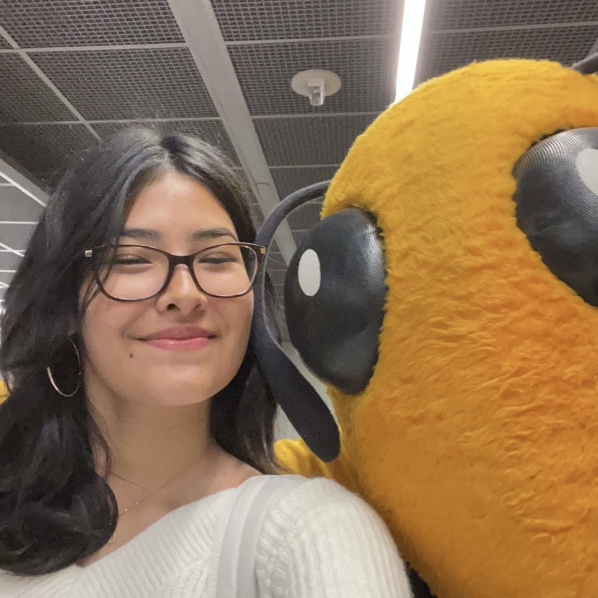

Abigail Herbas
Hello! I'm Abi, a second-year Computer Science major here at tech. I'm originally from northern Virginia, hence the picture of the Washington Monument. I'm very passionate about helping promote free educational STEM opportunities to kids in disadvantaged communities. I believe that outreach programs like these are important to help foster diversity in the STEM field. In high school, I was part of my school's VEX robotics team and also volunteered at FIRST robotics competitions. In my free time I like to code, cook, dance, and sail.